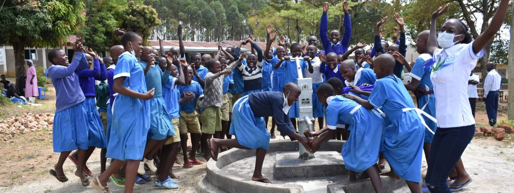

A Good Education
...begins with access to safe water and proper sanitation
Education is critical for breaking the cycle of poverty and yet over half of the world's schools lack access to safe water and sanitation facilities.
Lack of clean water has serious effects on students' academic performance and attendance rates. The lack of safe water can cause even the best
students to lose momentum as they deal with stomach pains and diarrhea from disease and hunger.
Students miss class to go fetch water, or to care for sick parents or siblings. In many places HIV/AIDS has already caused a large percentage of
children to become orphans, requiring students to drop out and find work to provide food and care for younger siblings. If teachers are sick,
classes get cancelled for all students.
Schools cannot run programs if they cannot provide water to students, faculty and their families.
Lack of Water = Lack of Equality
For girls, the situation is especially troublesome. If schools do not have proper toilets, girls drop out once they reach puberty. Further, it is
typically the responsibility of the women to fetch water thus limiting their access to both education and business opportunities. Think about
it: everyday, women and young girls carry more than 40 pounds of dirty water from sources over 4 miles away from their homes. This leaves
little time for education which is critical to changing the long term prospects of developing nations.
With the many additional burdens that a lack of clean water brings, education simply becomes less of a priority. This sets up an unfortunate
cycle of poverty and inequality as without a proper education, there is little chance of improving one's situation later in life. The Water Project
is working to break this cycle. Sometimes the first public voice the women of a community ever have, comes from an individual woman who
is part of a water committee
Access to Clean Water Improves...

Education
With water right on school property, students won’t miss class to quench their thirst, clean their classrooms, or supply school
kitchens with water. With water at home, kids don’t waste homework time walking long distances in search of water
for their households.

Health
Water projects close to home rescue people from drinking whatever dirty water they can find. More water also means less rationing,
so it’s easier to stay hydrated, wash hands, and clean homes, preventing future illnesses.

Hunger
In our service areas, almost everyone has a farm or garden. To
them, a lack of water means a lack of food. Improved crop
irrigation equates to healthier and more plentiful crops.

Poverty
Sourcing water when it’s scarce day after day saps everyone’s time and energy. With water at their fingertips, people spend more time investing in their households and livelihoods.